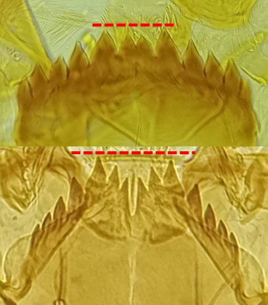
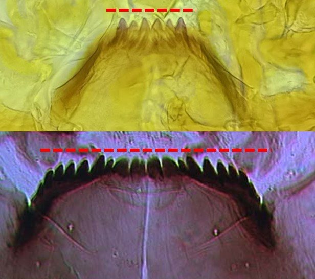
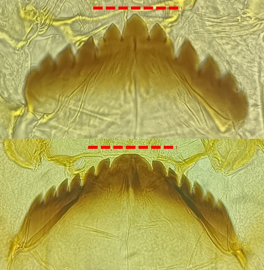

Sous famille des Orthocladiinae
Pas de mamelon sur la dent centrale



Dent(s) médiane(s) encastré(es)
Mentum souvent fortement arqué (4-8 dents latérales). Généralement, prémandibules avec 2-3 dents (mais peut en avoir jusqu’à 6)
Dent(s) médiane(s) proéminente(s)
Dent(s) médiane(s) de taille supérieure à la 1ère paire de dent latérale